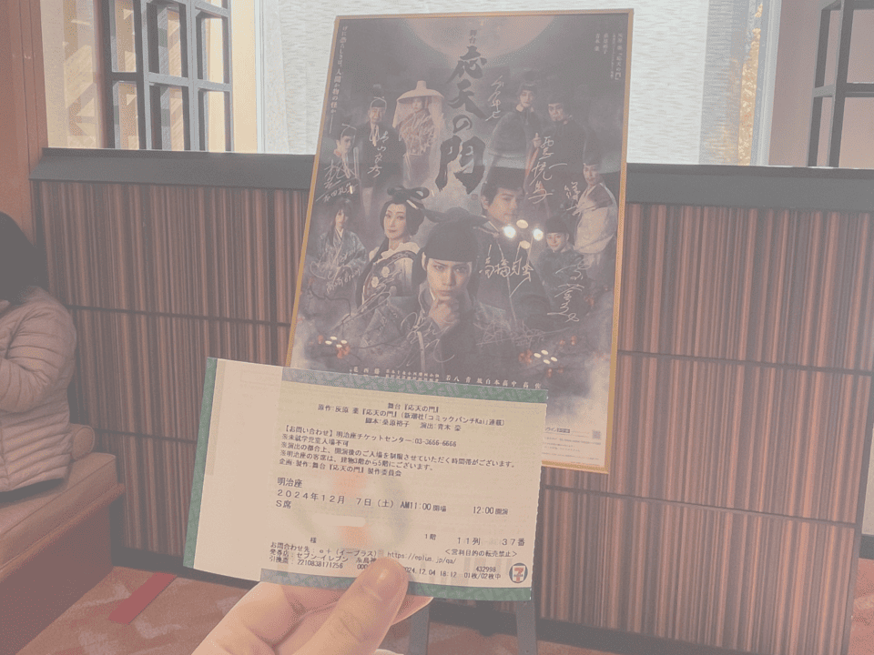

24.12.07
舞台『応天の門』
主演：佐藤流司, 高橋克典
明治座(東京)
母と鑑賞。漫画原作の舞台。主人公は菅原道真と在原業平。平安京を舞台にお話が進んでいく。当時の人々は目に見えないものを妖や鬼の仕業だとしていたけど、菅原道真がそれらの謎を自身の知識を使って解き明かしていく話。現代なら鬼の仕業、なんて考えることはないけど、科学や医療が発達していない当時はそう考えることができなかったんだろうなあと思うし、そんな中、「原因はこれだ」と言えたり、事件を解決できたりした菅原道真は知識量がすごかったんだなあと思う。
今回道真を演じた佐藤流司さんは、道真の博識さを出すために道真に関する本や沢山の書籍を読んだらしい。俳優さんの役作りって本当に尊敬する。